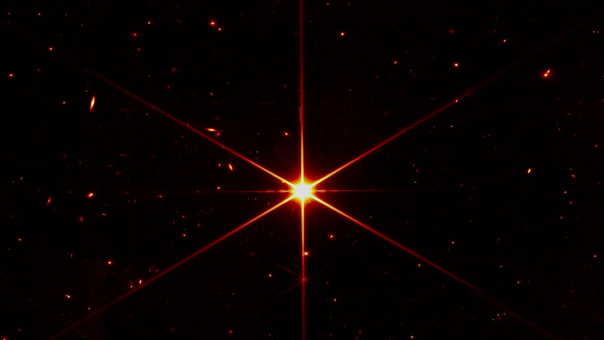
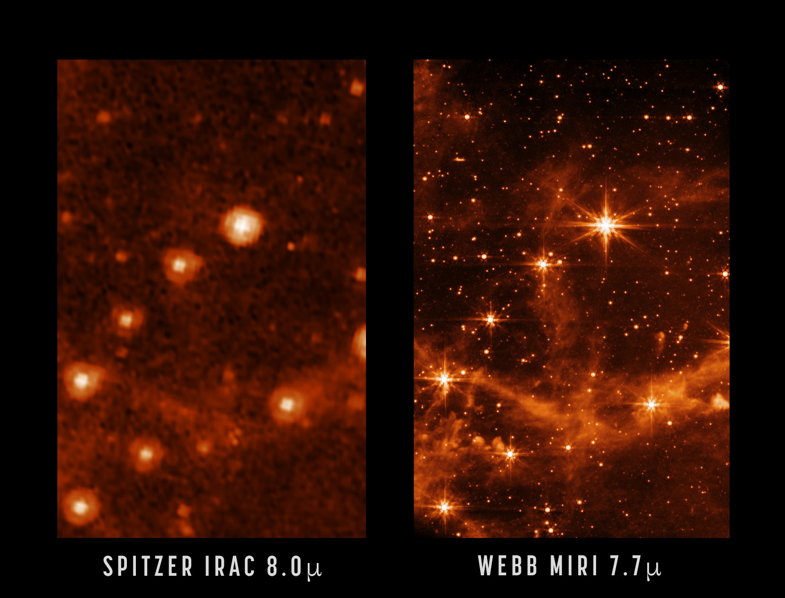
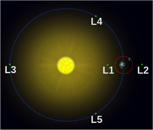
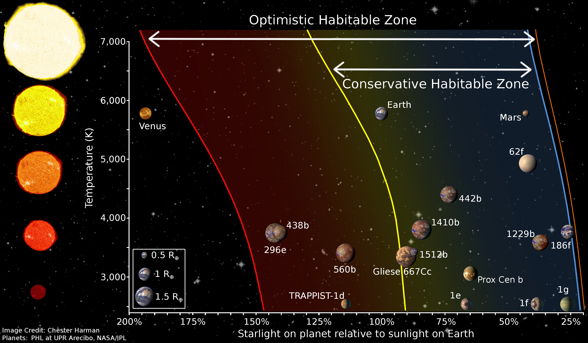
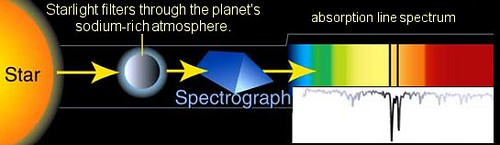
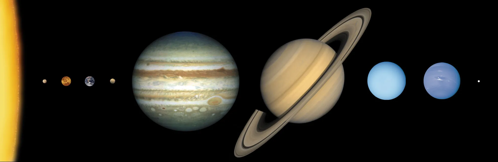
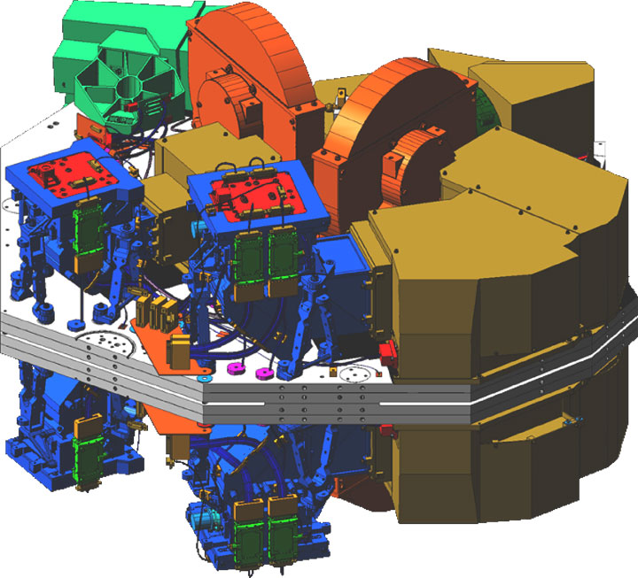
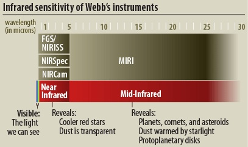

The Purpose of JWST
Seeking Light From The First Stars & Galaxys
JWST will observe a part of space and time that has never been seen before. It will take a look at the very first stars and galaxys formed directly after the
big bang. Due to the expansion of the universe, light emitted from stars begins to fade into the red/infrared parts of the electromagnetic spectrum. Currently,
we have taken calibration photos of distant stars that are sharper than ever before! Below is an example of this.


Location and Orbit
The JWST circles a precise point in space known as the Lagrange 2 Point. A Lagrange Point is where objects are influenced by two
large masses such as the earth and sun an can hold gravitationally stable orbits. The L2 point is about 4 times further than the moon,
which only gives us one shot at getting this mission right.

Distant Worlds
Other observations that the JWST will make will be analyzing exoplanets (planets outside our solar system) atmospheres for bio-signatures that are located
in the goldilocks zone. The goldilocks zone is the optimal distance for a planet relative to its host star's size and luminosity. Bio-signatures are tell
tale signs of life such as oxygen and fossil fuel emissions.


Close To Home
Not only will JWST observe the distant universe, but It will look at planets in our own solar system to determine their origins and age. After that
It will compare its results with observations on exoplanets to get a better understanding of how our own solar system formed. It is expected
that huge advances in its studies will be made for most of its solar system targets.

Next Generation Technology
The JWST is equipped with many groundbreaking technologies. To name a few: The NIRCam, NIRSpec, MIRI, FGS/NIRISS.
The NIRCam (Near infrared camera) is the primary camera that will cover the infrared wavelength from the earliest stars and galaxies.
The NIRSpec (Near infrared specctrograph) is used to disperse light from an object into a spectrum. With this, the JWST will be able to analyze the
chemical composition of any object it analyzes, including atmospheres of exoplanets. The MIRI(Mid-infrared instrument) is a sensitive instrument that
will analyze a larger wavelength in the EM spectrum. It will provide more physical details of distant objects that it observes. And finally the FGS/NIRISS
(Fine guidance sensor/ near infrared imager and slitless spectrograph) allows the JWST to point precisely.

